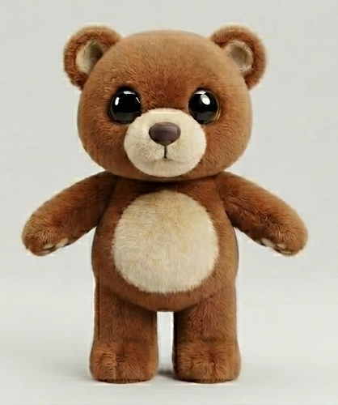

🐻
'"/>
Blocky Bear
Story Hunt
Help Blocky Bear find all the missing story pages!
✨ Let's Go!
Point your camera at the sign!
📖 Blocky Bear Story Hunt
Point at the sign
📷 Scan QR
Scan the QR code on the sign
Close
📖 All Pages Found — Story Time! 🐻
Story Complete!
You Found
Every Page!
You helped Blocky Bear put the whole story back together!
Bring this screen to the
Manager's Office on the north side
to claim your prize!
🐻 📖 ✨
🎉 Replay Ending
Done!